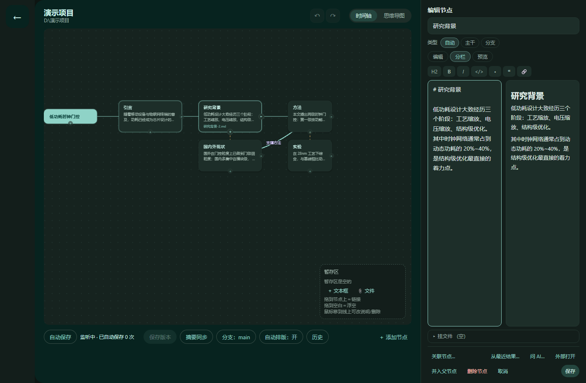
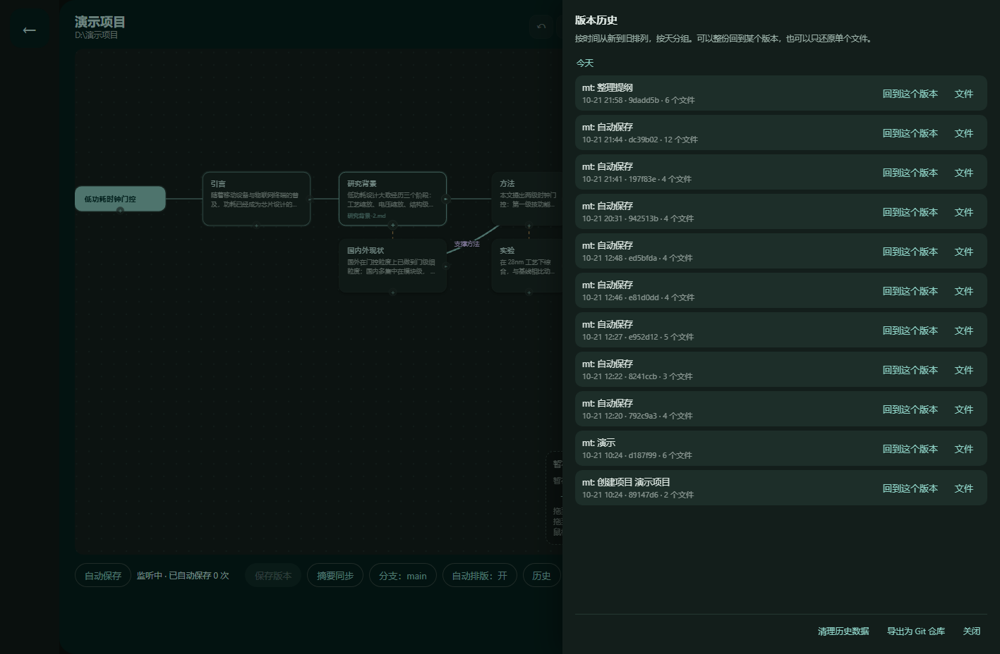

用思维导图写论文
每一次保存都能回档
边写边长出提纲：节点就是章节，保存就是版本。改坏了随时回到任意一版， 连节点树一起回来。全部在本机跑，文件不会上传到任何地方。
它到底解决什么
写论文最难受的不是打字，是「这里该写什么」和「改坏了怎么办」。这两件事各有一个功能对着干。
思维导图式的提纲
每个节点就是一段正文，写进项目里的 .md 文件。节点之间连线表示「支撑」「对比」， 随便拖、随便连，导图不用先想好再画。
节点 = 章节每次保存留一个版本
点保存就记一版，自动保存也会记。版本历史按天分组，可以整份回档， 也可以只还原某一个文件。回档连节点结构一起回到那个样子。
内容寻址 + 分支文档转换
Word / Excel / Markdown / PDF 互转，全在本地。PDF 是哪种、能做什么， 界面上直接写清楚，转不了会明确报错，不会产出一个空文件。
PDF 策略写在界面上文献检索与引用
走 OpenAlex / Crossref / DOAJ / PubMed / Semantic Scholar 这些开放学术源。 下载即入库，按 DOI 去重，一键生成 GB/T 7714、APA、IEEE、MLA 引用， 也能导出 BibTeX / RIS。
中英文都支持扫描件 OCR
图片型 PDF 没有文字层，抽不出字。这里会把它渲染成图片再识别， 默认用 Windows 自带的 OCR 引擎，不下载任何东西就能用。
零下载可用可选 AI 助手
检索完全在本地做，命中的片段才会发到你配置的端点。 可以配多个（DeepSeek / OpenAI / 本地 Ollama），聊天记录能一条条删。
自带 Key，不内置服务一条完整的工作流
查文献到交稿，中间不用换工具，也不用担心哪天打开发现草稿没了。
节点里的正文就是普通的 Markdown 文件，放在你自己的文件夹里 —— 用 Typora、VS Code 直接改也行，下次打开程序会认。
长什么样
没有欢迎页、没有仪表盘 —— 打开就是你的提纲。


它做不到什么
下面这些写在界面上，也写在这里。提前说清楚，比用的时候才发现强。
| 还原 PDF 版式 | 不做。PDF 抽的是文字，分栏和表格会丢；要原版式请直接打开原 PDF。 |
| 加密 PDF | 读不了，会明确提示需要密码，不会产出一个空文件。 |
| 扫描件质量 | 取决于原图清晰度和系统 OCR 语言包。模糊的扫描件识别率会明显下降。 |
| AI 服务 | 程序不内置任何模型服务，需要你自己填一个 OpenAI 兼容的端点。 |
| 跨平台 | 目前只有 Windows（依赖 WebView2 和系统 OCR）。 |
| 团队协作 | 没有。项目是本地文件夹，多人改同一份建议用 Git 自己管。 |
下载
先说清楚：论文功能只在 4.0 快照版里，且它还没稳定。 3.7.0 是老的工具集（下载 / 音乐 / 文档转换），没有思维导图也没有版本回档。
稳定版 v3.7.0
Windows 10 / 11 · 64 位 · 约 120 MB
这是 3.x 系列，只有下载 / 音乐 / 文档转换这些工具，没有论文功能（没有思维导图、没有版本回档）。
想要论文写作请看下面的 4.0 快照版。
快照版 v4.0.0-snapshot 不稳定
4.0 是把重心搬到论文写作后的第一个版本（思维导图 + 版本回档为主线，媒体工具收进附加工具箱）。
本页上面介绍的功能，指的都是这个版本。
功能能日常用，但没经过长时间验证。建议在新项目上试，重要论文同时留一份普通文件夹备份。
程序会检查更新：有新版本时在「设置 → 更新与自检」里一键下载安装， 装完自动重新打开。也可以在上面那个页面手动下载。
常见问题
| 我的论文存在哪？ | 就是你建项目时选的那个文件夹。程序只在里面加一个 .mt 目录（版本库），其它文件都是普通的 md / 附件。 |
| 会不会偷偷上传？ | 不会。下载、转换、OCR、检索都在本机。只有你主动点「问 AI」时，命中的片段才会发到你填的端点。 |
| 版本库坏了怎么办？ | 「设置 → 更新与自检 → 自检并修复」会校验界面文件；项目版本库是 SQLite，建议定期把整个项目文件夹备份一份。 |
| 为什么默认看不到下载功能？ | 这个程序的主线是论文写作。视频下载、音乐、剪辑、图片放大放在「附加工具箱」里，默认关闭，在设置里可以打开。 |